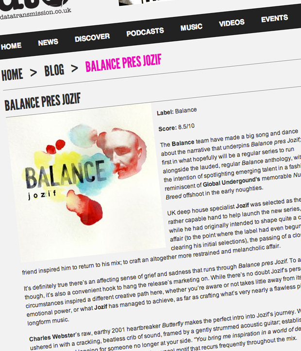

Balance Pres. Jozif
{kind=link}

Label: Balance Score: 8.5/10 The Balance team have made a big song and dance about the narrative that underpins Balance pres Jozif; the first in what hopefully will be a regular series to run alongside the lauded, regular Balance anthology, with the intention of spotlighting emerging talent in a fashion reminiscent of Global Undergound’s
memorable Nu-Breed offshoot in the early noughties.
UK deep house specialist Jozif was selected as the rather capable hand to help launch the new series, and while he had originally intended to shape quite a clubby affair (to the point where the label had even begun clearing his initial selections), the passing of a close friend inspired him to return to his mix; to craft an altogether more restrained and melancholic affair.
It’s definitely true there’s an affecting sense of grief and sadness that runs through Balance pres Jozif. To a degree though, it’s also a convenient hook to hang the release’s marketing on. While there’s no doubt Jozif’s personal circumstances inspired a different creative path here, whether you’re aware or not takes little away from its heady emotional power, or what Jozif has managed to achieve, as far as crafting what’s very nearly a flawless piece of longform music.
Charles Webster’s raw, earthy 2001 heartbreaker Butterfly makes the perfect intro into Jozif’s journey. We’re ushered in with a crackling, beatless crib of sound, framed by a gently strummed acoustic guitar; establishing a sense of loss and longing for someone no longer at your side. “You bring me inspiration in a world of despair… melody in a mellow sky, my sweet butterfly.” It’s a vocal motif that recurs frequently throughout the mix.
Jozif slowly turns the dial on the BPMs upwards towards the end of Butterfly with a smooth, studio-assisted shift into Our Friends Electric; keeping it on the gentle, vocal-led electronica tip, the ethereal levels start to rise as subdued breakbeats creep into the mix. And just when you think he’s finally ready to move things onto the dancefloor, he lowers the energy back down again with the powerfully sad piano twinkle that encircles Lake Powel’s More Or Less.
When Jozif finally lets the rhythm of the mix settle in, it’s a silky smooth road of lush melodies and sumptuous deep house ambience. Pulling back at the right times, it’s still not long before it hits another emotional high note with Panorama Bar resident Steffi’s sublime piano house stunner Sadness; another tune built around a heartwrenching vocal. “Loneliness, emptiness, no happiness just sadness.” Never straying too far from the deepness though, Jozif sucks us into a trance when he deploys the pulsing, spacey syth bursts of Ian Pooley’sCompuhythm.
The strings that rise suddenly out of the clubby grooves of Jozif’s own BT’s 5 brings us to yet another peak, taking us completely by surprise this time, while the stuttering, processed guitar chords and soulful vocals of Rob Shields’Slum Room softens the energy again as he brings us to a sweet, gentle landing for the mix’s conclusion.
The extra time Jozif has spent in the studio carefully crafting this mix only becomes obvious on successive listens; there’s plenty of those long, eternally drawn out mixes, and the transitions are digitally smoothed over to the point where you do fail to notice the movement between songs; it lends it the organic feel of a longer, more seamless piece of extended music.
However, the studio work is deployed for the purpose of serving the emotion that’s being conjured in the mix, rather than for its own sake. Balance pres Jozif doesn’t make its mark via the groundbreaking technical wizardry that defined Joris Voorn’s entry into the original series, or even the exquisitely polished nightclub adventures heard recently from Nic Fanciulli and Funk D’Void. Instead, Jozif excels by essentially unplugging himself from these expectations altogether; as a result, it stands head and shoulders above your typical mix compilation.
Jozif has created something that’s genuinely gorgeous; with the recurring themes of loss and sadness, he somehow manages to hit those emotional high notes again and again. A stunning example of how heady, powerful feelings can be worked into the frame of electronic music, Balance pres Jozif is a mix compilation that definitely has a little (or a lot) more to offer.